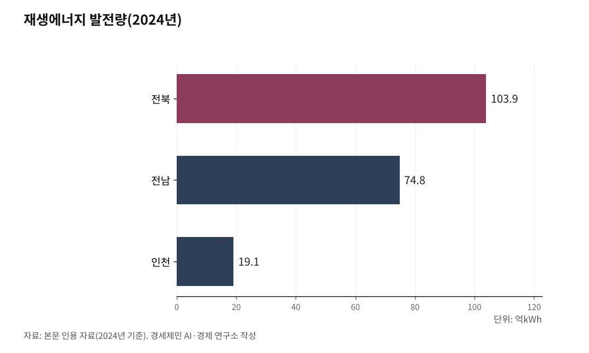

[인천해양산업, 생존기로⑮] 서해안 HVDC 11.5조, 인천이 관문
호남 출력제한 급증, 8GW 해저 송전망이 경인경제권과 충남을 잇는다
유럽 강소국은 생산지에 산업을 남겼다, 한국은 이제 시작이다
5극3특 시대, 인천은 서해권 연대의 무게와 자격을 함께 진다
1. 호남 출력제한 급증, 보낼 길이 없다
전남과 전북은 국내 재생에너지 생산 중심이다. 2024년 기준 전북 재생에너지 발전량 103.9억kWh, 전남 74.8억kWh로 두 지역 합계가 178.7억kWh에 이른다. 인천(19.1억kWh)의 9배가 넘는 규모다.

문제는 만든 전기를 보낼 길이 막혀 있다. 호남에서 경인경제권으로 보낼 수 있는 기존 송전선로 용량은 4.5GW에 그친다. KDB미래전략연구소는 2036년 호남 잉여 재생에너지가 58.5GW에 이를 것으로 전망했다. 기존 송전망으로는 감당이 어렵다.
보낼 길이 없으면 발전기를 멈춰야 한다. 출력제한이다. 2023년 기준 전남 출력제어 23회(전국 최다), 전북 5회였다. 2024년에는 호남권 전체가 26회, 제어 용량 7473MW로 늘었다. 2025년 상반기에는 44회, 제어 용량 3만8840MW로 6개월 만에 전년 전체의 5.2배를 넘어섰다.
발전소는 돌아가는데 전기를 보낼 곳이 없다. 재생에너지 사업자는 수익이 줄고, 투자 회수가 늦어진다. 계통에 실리지 못한 전기는 국가적 낭비다.

2. 11.5조 U자망, 4개 노선 8GW의 구조
정부가 서해안 초고압직류송전(HVDC, High Voltage Direct Current) 에너지고속도로를 추진하는 이유가 여기에 있다. 호남에서 생산한 재생에너지를 해저 송전망으로 경인경제권과 충남 산업지대까지 보내는 사업이다. 기후에너지환경부 발표 기준 총사업비 약 11조5000억원, 4개 노선, 총 용량 8GW다.
1단계 새만금~서화성은 220km, 2GW 규모로 2030년 준공을 목표로 한다. 당초 2031년에서 1년 앞당겼다. 사업비 약 2조8000억원이다. 한전은 2026년 3월 해저케이블 경과지 설계에 착수했다. 2단계 이후 신해남~당진(약 300km, 충남), 신해남~서인천(약 430km, 인천), 새만금~영흥(약 190km, 인천)이 2038년까지 단계적으로 구축된다.
제11차 전력수급기본계획(2024~2038)은 2038년 기준수요를 145.6GW로 전망했다. 수요관리 16.3GW를 차감한 목표수요가 129.3GW다. 재생에너지 설비를 121.9GW까지 확대하는 계획이 전제다. 이 전력을 생산지에서 소비지로 옮기는 물리적 통로가 HVDC다.
3. 생산지는 부담만, 소비지는 회피… 일극 체제의 그늘
HVDC가 필요하다는 데 이견은 적다. 문제는 구조다.
생산지는 부담을 떠안는다. 전북에서는 용인 반도체 국가산단 전력공급용 345kV 초고압 송전탑 건설에 시·군 14개 주민이 반대하고 있다. 서남권 해상풍력 양육점(해저케이블이 바다에서 육지로 올라오는 지점)이 2024년 3월 고창에서 부안 변산면으로 바뀌면서 부안 주민도 "설명 부족, 일방적 결정"이라며 반발하고 있다. 송전탑, 전자파, 경관 훼손, 지가 하락, 영농 불편이 생산지가 감당할 몫이다.
소비지는 회피해왔다. 전력 자립률을 보면 구조가 드러난다. 서울 8.9%, 광주 8.4%로 자체 전력 생산이 거의 없다. 경기 61.0%도 수요를 다 감당하지 못한다. 수십 년간 자체 발전 부지를 만들기보다 외부에서 전기를 받아 쓰는 구조를 유지해왔다.
인천은 그 사이에 있다. 인천 전력 자립률은 55.6%다. 영흥화력과 수도권매립지 인근 LNG발전소가 그동안 경인경제권 전력을 받쳐왔다. 이제는 해상풍력 6.2GW 자체 발전 계획을 세우면서, 동시에 호남·충남 전기의 종착지 역할까지 맡는다. 생산지의 부담도, 소비지의 편익도 함께 겪는 위치다.
이 구도는 1960년대 이후 경인경제권 일극 체제가 남긴 유산이다. 사람과 돈이 한곳에 몰리니 전기 수요도 한곳에 몰렸고, 부담은 밖으로 밀려났다. 서해안 HVDC는 그 구조를 그대로 둔 채 송전망만 넓히는 공사로 끝나서는 안 된다.
4. 유럽 강소국은 산업을 남겼다, 한국은 이제 시작이다
해법은 크게 세 가지다. 생산지에 산업을 남기는 것, 주민에게 연금을 보장하는 것, 지역에 재정을 귀속시키는 것이다.
독일은 보상에서 시작했다. 북부 해상풍력 전력을 남부로 보내는 쥐트링크(SuedLink, 700km, 약 100억유로)는 전면 지중화를 원칙으로 정하고, 송전선로 경유지에 km당 최대 4만유로를 보상했다. 연방정부는 2026년까지 65억유로 송전망 사용료 보조금을 지급한다. 보상은 갈등 비용을 낮췄지만, 그것만으로는 지역이 살아나지 않는다.
진짜 변화는 산업에서 왔다. 독일 브레머하펜은 항만 안에 프라운호퍼 해상풍력연구소(IWES)를 두고 블레이드 시험대, 나셀 시험대, 그리드 통합 연구 시설을 집적시켰다. 덴마크 에스비에르는 해상풍력 운영·유지보수(O&M, Operation & Maintenance) 거점으로 성장하면서 부품 제조, 정비, 서비스 일자리가 항만에 모였다. 영국 험버는 해상재생에너지기술혁신센터(ORE Catapult, Offshore Renewable Energy Catapult)의 O&M 우수센터를 중심으로 해상풍력 산업 클러스터를 키웠다. 유럽 강소국 모델의 핵심은 "생산지에 산업이 남는다"는 원칙이다. 인구 7만~13만명 규모의 중소 항만 도시가 글로벌 해상풍력 허브로 성장한 이유다.
한국은 이제 시작이다. 해상풍력발전 입지계획 수립 등에 관한 특별법이 2026년 3월 26일 시행됐다. 계획입지, 주민수용성 사전 검증, 이익공유제가 골자다. 국회에서는 발전사업자에게 최대 20% 공유지분을 요구하고 수익의 70%를 국민, 30%를 인근 주민에게 배당하는 이익공유법도 추진하고 있다.
여기서 한 걸음 더 나아가자는 요구가 나오고 있다.
첫째, 주민 배당을 일회성 보상이 아니라 "재생에너지 연금"으로 제도화하자는 제안이다. 노르웨이 국부펀드, 알래스카 영구펀드처럼 생산지 주민이 발전 수익을 평생에 걸쳐 나눠 받는 구조가 해외에는 이미 있다. 한 번 받고 끝나는 돈은 갈등을 미룰 뿐이라는 지적이다.
둘째, 지역자원시설세를 재생에너지에도 확대하자는 논의다. 현재는 원자력과 화력 발전에만 부과되고 있고, 세수는 비수도권 도시재생과 생활 인프라 재원으로 쓰인다. 재생에너지 시대에 같은 원칙이 작동하지 않으면 생산지 지방재정이 지속 가능하지 않다는 진단이다.
셋째, 산업 이식이다. 5극3특 분권과 AI 시대는 같은 방향을 가리킨다는 분석이 나온다. 해상풍력 O&M 데이터 AI, 송전망 최적화 AI, 재생에너지 거래 AI는 반드시 소비지에 있을 이유가 없다. 생산지에 산업을 꽂아야 생산지가 자립한다는 주장이다.
5. 인천, 서해권 연대의 무게와 자격
4개 노선 가운데 신해남~서인천(약 430km)과 새만금~영흥(약 190km) 노선 2개의 종착지가 인천이다. 인천연구원은 "인천이 서해안 재생에너지 전력의 관문이자 경인경제권 서부 전력 허브"라고 분석했다. 서인천변전소와 영흥변전소가 HVDC 전력을 받아 경인경제권 전역으로 배전하는 구조다. 신송도 변전소(345kV)는 2028년 2월 준공을 목표로 건설 중이다.
인천은 종착지에 그치지 않는다. 자체 해상풍력 6.2GW(총사업비 약 31조원)가 추진 중이다. 오스테드 1.6GW는 발전사업 허가를 받았고, 2028년 5월 착공을 목표로 인허가 절차를 진행하고 있다. 영흥화력 1·2호기가 2034년 LNG로 전환되고, 3·4호기는 2038년 암모니아 혼소로 바뀌는 흐름에 맞춰, 인천은 해상풍력과 HVDC가 만나는 전력 거점으로 재편된다.
이 이중 정체성은 책임으로 이어진다. 인천은 생산지의 요구와 종착지의 역할을 동시에 아는 유일한 도시다. 호남·충남과 경인경제권 사이에서 서해권 연대를 주도할 자격과 의무가 있다. 인천이 자기 이익만 말하면 호남에 또 하나의 소비지가 될 뿐이다. 생산지에 산업을 남기는 모델, 주민에게 연금을 보장하는 제도, 지방에 재정을 귀속시키는 재원 구조를 인천이 먼저 꺼내 들 위치에 있다.
이를 위한 연구·정책 거점이 필요하다. 호남 재생에너지와 인천 해상풍력이 만나는 지점에서 송전망 설계, 출력제한 최적화, O&M 물류 체계, 전력구매계약(PPA, Power Purchase Agreement) 모델, 생산지-소비지 상생 구조를 연구할 기관이 어디에도 없다. 독일 브레머하펜에는 프라운호퍼가 있고, 덴마크 에스비에르에는 에너지기술센터가 있다. 경인경제권 2600만명의 에너지 관문 인천에는 이 역할을 할 연구기관이 없다.
부산은 부경대와 한국해양대 통합을 추진하며 해양·수산 연구 인력을 키우는 길로 나아가고 있다. 인천 앞에 놓인 과제는 에너지·해양·AI를 잇는 융합 연구기관이다. 서해권 강소국 모델은 여기서 시작된다.
참고문헌
·"제11차 전력수급기본계획 확정", 산업통상자원부, 2025.2.21. https://www.korea.kr/briefing/pressReleaseView.do?newsId=156675471
·"에너지 고속도로 의의 및 해외 동향", KDB미래전략연구소, 2025.9.25. https://rd.kdb.co.kr
·"Energy transition clears crucial hurdle", Bundesnetzagentur(독일 연방네트워크청), 2026.1.2. https://www.bundesnetzagentur.de/SharedDocs/Pressemitteilungen/EN/2026/20260102_Netzausbau.html
·"한전, 2025년 결산 실적(잠정) 발표", 한국전력공사, 2026.2.26. https://home.kepco.co.kr
·"해상풍력 보급 촉진 및 산업 육성에 관한 특별법", 국가법령정보센터, 2026.3.26. https://www.law.go.kr
·"국가기간 전력망 확충 특별법", 국가법령정보센터, 2025.9.26. https://www.law.go.kr
·"지방세법 제141조~제147조(지역자원시설세)", 국가법령정보센터. https://www.law.go.kr
·"2024 지역자원시설세 현황과 이해", 국가균형발전위원회, 2024. https://www.nabis.go.kr
·"전북 서남권 해상풍력 공동접속설비(양육점) 위치 부안 최종 확정", 전북특별자치도, 2024.3.14. https://www.jeonbuk.go.kr
·"에너지 고속도로 정책과 인천광역시에 대한 시사점", 인천연구원, 2025.
·"한전, 서해안 HVDC 에너지고속도로 본격 착수", 아시아투데이, 2026.3.19. https://www.asiatoday.co.kr/kn/view.php?key=20260319010005857
·"남동발전, 탈탄소 속도…영흥화력 조기 폐쇄 기대감", 인천일보, 2025.7.28. https://v.daum.net/v/20250728201502476
·"부경대·한국해양대 통합 논의 본격화", 한국경제, 2023.12.5. https://www.hankyung.com/article/202312055655h
※ 이 기사는 AI 프로그램 클로드를 활용해 작성했습니다.
※ 이 기사는 인공지능을 활용해 작성했습니다.
관련기사
- [인천해양산업, 생존기로⑯] 유럽 3도시 30년, 타이중 10년… 인천해상풍력은 어떻게
- [인천해양산업, 생존기로⑰] 항공우주산학융합원 9년, 해양도 할 수 있다
- [인천해양산업, 생존기로⑱] 해양·항만·수산 융합 정책연구기관, 지금 당장
- [인천해양산업, 생존기로⑭] 6.2GW 자체 전력으로 AI 데이터센터를 돌려라
저작권자 © AI경세제민 무단전재 및 재배포, AI학습 및 활용 금지